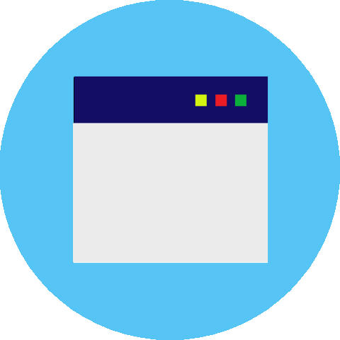
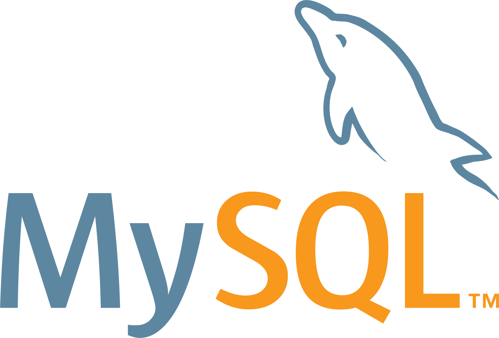
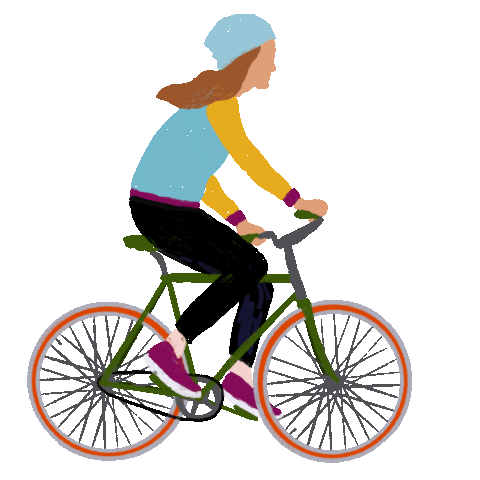
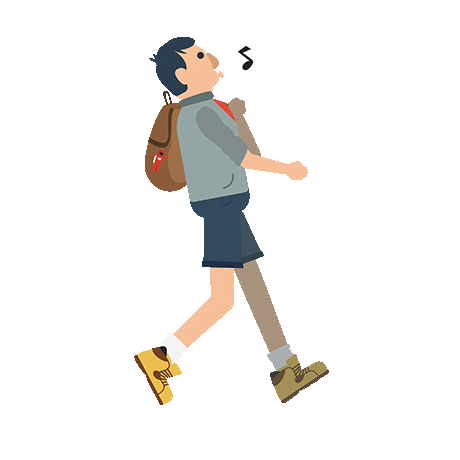
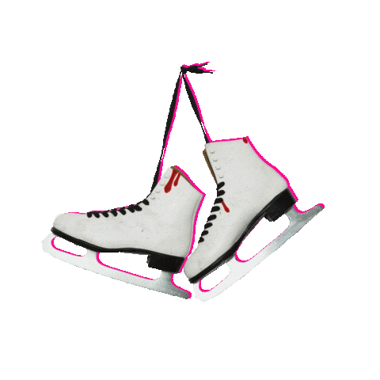
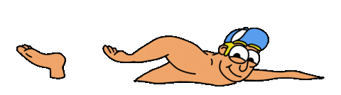
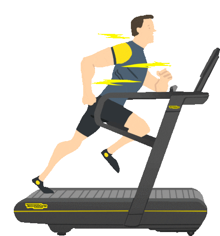
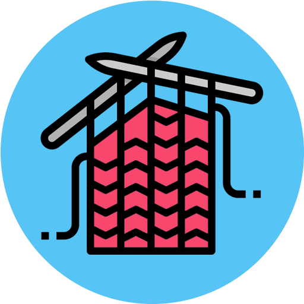

Gergő vagyok
egy szoftverfejlesztő

egy szoftverfejlesztő

WEB -FullSstack, -Backend és App Fejlesztő vagyok.
A Főkefe cégnél dolgozom a Laky Adolf utcában, mint ügyintéző.
Én 💗 az energiaitalokat és kávé mellé elszívok napi 2-3 cigarettát is.
|  |
Dizájn & Fejlesztés13 éves korom óta foglalkozom számítógéppel. |

|
|
 |

|

|

|

|
TestedzésNagyon szeretek kerékpározni és túrázni. |

|
|  |  |  |  |  |
|  |
Hobbik
Magamnak főzök, amikor csak lehet; |